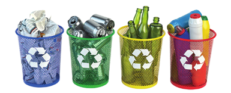
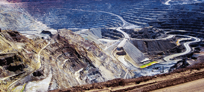
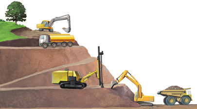
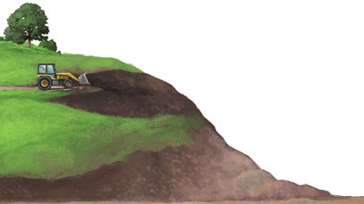

Gestión sostenible de los recursos mineros
Los recursos mineros son escasos y no renovables, por lo que se agotarán en poco tiempo si no se realiza una gestión sostenible de los mismos. Esta gestión deberá incluir las siguientes estrategias.
Uso eficiente de los recursos
El desarrollo de nuevas tecnologías permite ahorrar recursos minerales.
- Al reducir el peso de los vehículos, se disminuye el gasto de combustible.
- Mediante descargas legales de música y películas en Internet, se evita el gasto de recursos minerales en soportes físicos.
Reciclaje y reutilización
Reciclar y reutilizar los productos reduce la extracción de recursos minerales.
- Los teléfonos móviles y otros dispositivos electrónicos tienen componentes de origen mineral que se pueden reciclar.
- Los envases metálicos de aluminio o acero se pueden reciclar sin pérdida de eficacia o calidad.

Reemplazo de recursos escasos
Es posible sustituir los recursos minerales escasos o muy contaminantes por otros que realicen la misma función.
- Existen metales, como el mercurio, muy contaminantes, que pueden ser sustituidos por otros.
- Es beneficioso reemplazar los recursos energéticos minerales por otros renovables.
Extracción sostenible
La extracción de los recursos minerales se debe realizar con medidas de protección medioambiental.
- Los proyectos de extracción mineral tienen estudios de impacto medioambiental.
- Las explotaciones mineras, una vez agotadas, deben restituir las condiciones medioambientales iniciales.

Gestión de una explotación a cielo abierto
Las explotaciones mineras degradan el medioambiente donde se realizan. Por esta razón, hay que reducir su efecto antes y después de la extracción del recurso mineral.
1. Retirada del suelo para su conservación.
2. Extracción del recurso mineral.
3. Rellenado de la corta.
4. Reposición del suelo.
5. Restauración de la vegetación.

